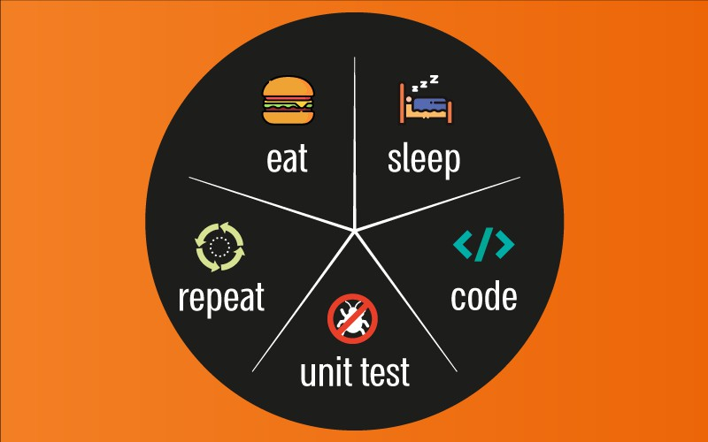

Un test unitaire permet de s’assurer du fonctionnement correct d’une
partie déterminée d’une application ou d’une partie d’un programme.
Il a pour objectif d’isoler le comportement de la partie de code à tester
de tout facteur extérieur et de vérifier qu’il est conforme à ce qui est
attendu.
Le test unitaire va donc être écrit pour tester une toute petite partie du
code source, indépendamment de l’environnement qui l’entoure.
Il doit être déterministe, c’est-à-dire qu’exécuté plusieurs fois, il
devra toujours retourner le même résultat.
code apps/app-with-testsyarn test
Les tests fonctionnels sont destinés à s’assurer que, dans le contexte
d’utilisation réelle, le comportement fonctionnel obtenu est bien conforme
avec celui attendu.
Un test fonctionnel a donc pour objectif de dérouler un scénario composé
d’une liste d’actions, et pour chaque action d’effectuer une liste de
vérifications validant la conformité de l’exigence avec l’attendu.